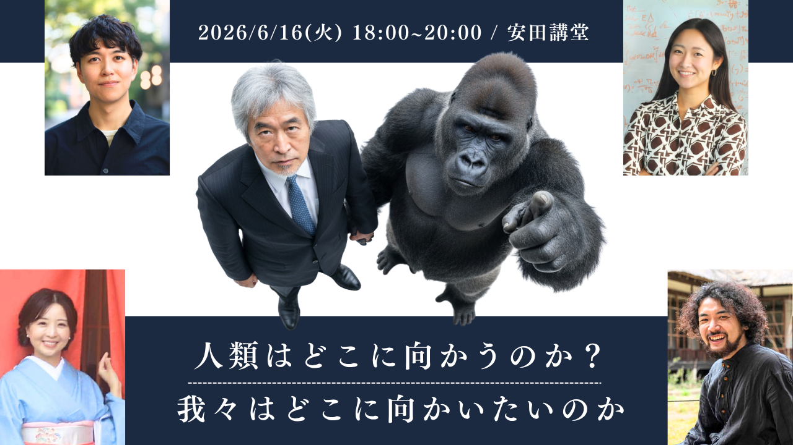
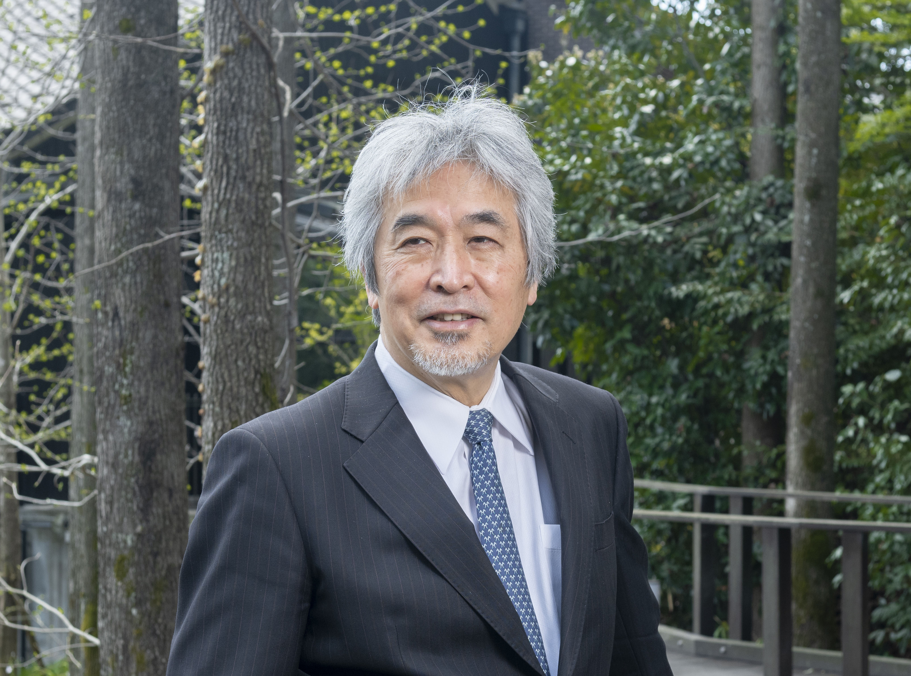

山極 壽一 氏
前京都大学総長 ／ 総合地球環境学研究所所長
総合地球環境学研究所 所長。1952年東京生まれ。霊長類学・人類進化論を専門に、屋久島のニホンザルやアフリカの野生ゴリラの社会生態学的研究に従事。「つながり」と「共感」から人間社会を読み解く。京都大学教授・理学部長等を経て第26代京都大学総長(〜2020年)。日本学術会議会長、国際霊長類学会会長、2025年大阪・関西万博シニアアドバイザー等を歴任。南方熊楠賞、アカデミア賞受賞。

— 答えなき問いに向き合う混沌（カオス）のタベー —
参加費：4,000円（早期割引・学生料金設定あり）
このイベントは、答えを一つにまとめるための場ではありません。むしろ、異なる専門、立場、実践を生きる人たちが、それぞれの「驚き」を手に持ち寄ることで、これまで見えなかった人類社会の未来の可能性を立体的に浮かび上がらせる試みです。霊長類学、素粒子物理学、仏教思想、AI×XR技術、そして地域の場づくり——視点が異なるからこそ、共感、技術、身体がどこで結び直されうるのかが見えてきます。安田講堂100周年という歴史の重なりの中で、私たちは「正しさ」を競うのではなく、「驚き」が人を動かし、関係を変え、社会を変えていく瞬間に立ち会いたい。この場が、次の100年へ向けた問いの起点になることを願っています。

前京都大学総長 ／ 総合地球環境学研究所所長
総合地球環境学研究所 所長。1952年東京生まれ。霊長類学・人類進化論を専門に、屋久島のニホンザルやアフリカの野生ゴリラの社会生態学的研究に従事。「つながり」と「共感」から人間社会を読み解く。京都大学教授・理学部長等を経て第26代京都大学総長(〜2020年)。日本学術会議会長、国際霊長類学会会長、2025年大阪・関西万博シニアアドバイザー等を歴任。南方熊楠賞、アカデミア賞受賞。
素粒子物理学者（ニュートリノ物理学）。ハーバード大学博士。国際共同研究DUNEに参画し、Forbes Asia 30 Under 30等にも選定。
Quark共同創業者・CEO。東大院博士課程。AI×XRで技能移転と社会インフラのDXに取り組むエンジニア。
京都・集会所喫茶店「ことぶき」女将。看護師。環境アクションと対話の場づくりを推進する実践者。
空海研究者。NPO「寺子屋みなてらす」共同創業。東大文学部卒、現在は多摩美術大学大学院で研究を深めている。
| 日時 | 2026年6月16日（火） 18:00 - 20:00 |
|---|---|
| 会場 | 東京大学本郷キャンパス 安田講堂 |
| 参加費 | 4,000円（早期割引・学生料金設定あり） |
| 主催 | 学士会YELL / 京大若手会 / eumo / GENERYS / UTokyo |